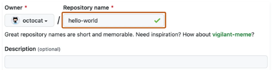
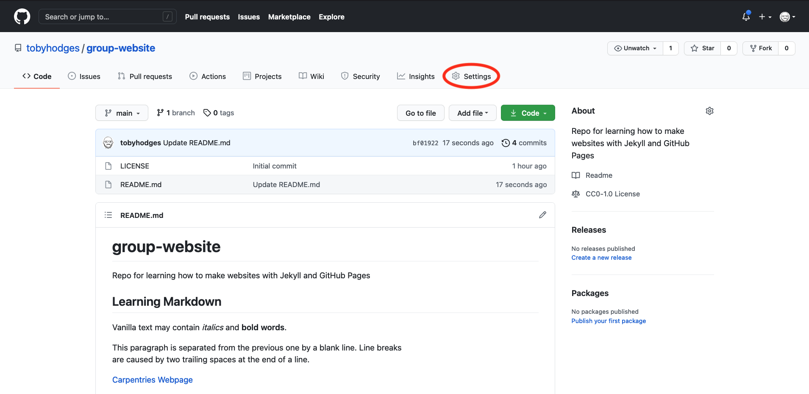
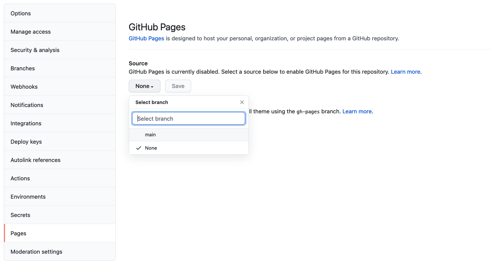
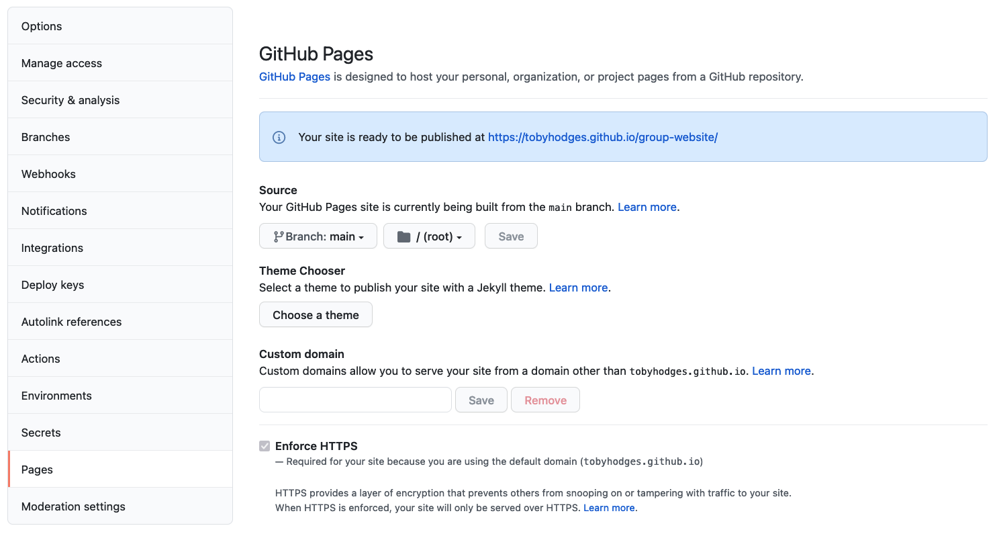

Beginner's Guide to Deploying with GitHub Pages
1. Introduction
What is GitHub Pages?
GitHub Pages is a powerful feature offered by GitHub that allows users to host static websites directly from their repositories. With minimal setup, GitHub Pages turns your GitHub repository into a web server that hosts HTML, CSS, and JavaScript files. It's a convenient, free option for developers and non-developers alike who want to showcase their work or publish static content.
GitHub Pages is ideal for:
- Personal portfolios
- Project documentation
- Educational or hobby projects
- Simple blogs using static site generators (like Jekyll)
- Hosting resumes or CVs
The best part is that GitHub Pages supports custom domain names and HTTPS, making your website not only functional but also secure and professional-looking.
Use Cases for GitHub Pages
GitHub Pages serves a wide range of use cases for developers and creators of all levels. Some popular use cases include:
- Portfolios: Developers and designers use GitHub Pages to showcase their skills, completed projects, and resumes.
- Documentation Sites: Open-source and commercial projects often host their documentation using GitHub Pages.
- Educational Resources: Teachers and students create tutorial sites, interactive course materials, and code samples.
- Resume Hosting: You can build and host a clean, modern resume site using HTML and CSS.
- Event Pages: Perfect for simple event announcements or invitations.
By the end of this guide, you will be able to deploy your own static website using GitHub Pages.
2. Prerequisites
Before you start, make sure you have the following:
1. GitHub Account
If you don’t already have a GitHub account, sign up for free at https://github.com. GitHub is a web-based platform for version control using Git and is widely used in software development.
2. Basic HTML Project
Prepare a simple HTML project that includes the following files:
- index.html – the homepage of your website
- Optional: style.css, script.js, or any images/assets you want to include
Your file structure might look like this:
Make sure your index.html file is present in the root directory. This file will be served as the default home page when someone visits your GitHub Pages link.
3. Step-by-Step Deployment Instructions
Step 1: Create a GitHub Repository
- Go to your GitHub account dashboard.
- Click the + icon on the top right and select New repository.
- Enter a repository name (e.g., my-portfolio).Optionally, add a description.
- Choose Public (required for GitHub Pages to work without a custom domain).
- Do not initialize with a README or .gitignore at this step if you’re planning to upload an existing project.
- Click Create repository.
Step 2: Upload Your Project Files
You have two options to upload files:
Option A: Upload via GitHub Web Interface
- In the newly created repo, click Add file > Upload files.
- Drag and drop your project folder or files.
- Commit your changes by clicking Commit changes.
Option B: Upload Using Git (Command Line)
- Open your terminal.
- Navigate to your project folder.
- Initialize a local Git repository:
Step 3: Configure GitHub Pages
- Go to your GitHub repository.
- Click the Settings tab.
- Scroll down to Pages in the left sidebar or find it under the "Code and automation" section.
- In the Source section, select:
- Branch: Choose main (or master, depending on your setup)
- Folder: Choose / (root)
- Click Save.
After saving, GitHub will display a success message with your site’s live URL:
Your site is live at https://your-username.github.io/my-portfolio/
Step 4: Access Your Live Website
Visit the link provided to see your static site live on the internet!
You can share this link with others, include it in your resume, or even link it to a custom domain.
4. Screenshot Walkthrough
Screenshots can help you visually understand each step:
A. Creating the Repository
GitHub repositories store a variety of projects. In this guide, you'll create a repository and commit your first change.
- In the upper-right corner of any page, select , then click New repository.
- Type a short, memorable name for your repository. For example, "hello-world". Optionally, add a description of your repository. For example, "My first repository on GitHub." Choose a repository visibility.

- Select Initialize this repository with a README.
- Click Create repository.
B. Uploading Project Files
On GitHub, navigate to the main page of the repository. Above the list of files, select the Add file dropdown menu and click Upload files. Alternatively, you can drag and drop files into your browser. To select the files you want to upload, drag and drop the file or folder, or click choose your files.
C. Configuring GitHub Pages
- Click on the repository’s Settings tab (the one with the little cog/gear) as shown on the figure below:
- Click on the repository’s Settings tab (the one with the little cog/gear icon) as shown on the figure below:
 - On the menu on the left hand side, click on Pages

- You will see that the GitHub Pages settings are currently disabled. Select branch main to tell GitHub which branch to use as a source and click Save to enable GitHub Pages for this repository.

- The link to your repository’s website will appear in the highlighted box above. If you click the link - your default browser will open and show your project website. If this does not happen, you should manually open your favourite web browser and paste the URL.
- It may take a while (from a few seconds to a few minutes) for GitHub to compile your website (depending on GitHub’s availability and the complexity of your website) and it may not become visible immediately. You will know it is ready when the link appears in green box with a “tick” in front of the web address (as shown in the figure below).
- Once ready, you should see the contents of the README.md file that we created earlier, rendered as a website.
D. Live Website Demo

5. Common Errors and Troubleshooting
Error 404: Page Not Found
Issue: You set up GitHub Pages, but the site shows a 404 error.
Solution:
- Make sure your index.html file is in the root of the selected branch.
- Check if GitHub has finished building the site (can take a few minutes).
- Ensure the branch and folder selected in Settings > Pages is correct.
Wrong Branch or Folder
Issue: You selected a different branch or folder that doesn’t contain your HTML files.
Solution:
- Return to the Pages settings.
- Choose the correct branch (usually main) and folder (/root).
Git Push Errors (via Terminal)
Issue: Errors during command line upload (authentication or permission errors).
Solution:
- Make sure you’re authenticated via SSH or GitHub CLI.
- Use git remote set-url to double-check your remote repository link.
- Ensure you have permission to push to the repository.
6. Conclusion
Congratulations! You’ve successfully deployed your first static site using GitHub Pages. With this knowledge, you can now:
- Create more advanced portfolio websites
- Host documentation for your projects
- Showcase school assignments or bootcamp tasks
- Learn about custom domains and SEO for your site
What to Build Next?
Here are a few beginner-friendly project ideas to expand your skills:
- Personal Blog: Use HTML/CSS or static site generators like Jekyll.
- Project Showcase: Create individual pages for different coding projects.
- Resume Site: Build a one-page resume with sections for skills, work experience, and contact info.
- Interactive Web Page: Use JavaScript to add functionality like forms or animations.
- Educational Resource Site: Summarize topics you’ve learned and publish them for others to use.
Additional Resources
Feel free to share your site on social media or add the link to your resume to boost your online presence. Happy coding!